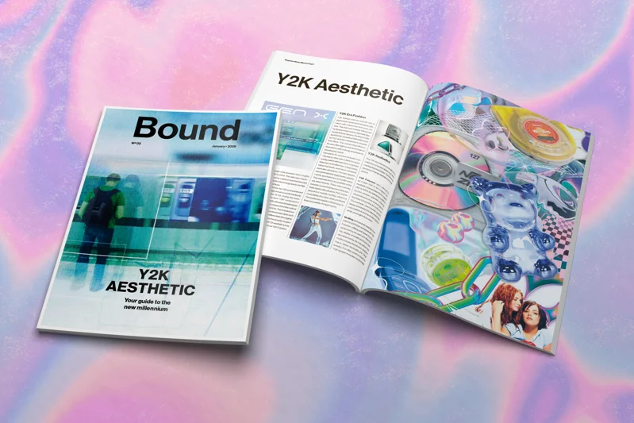
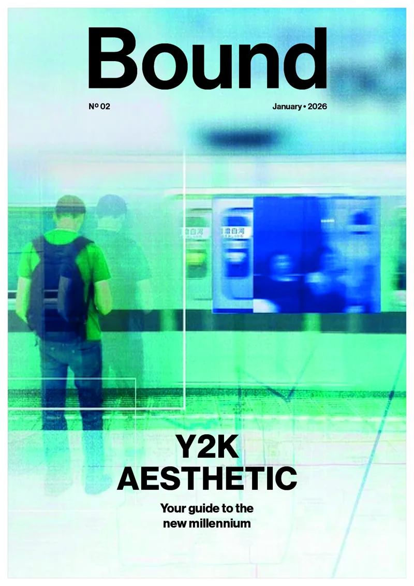
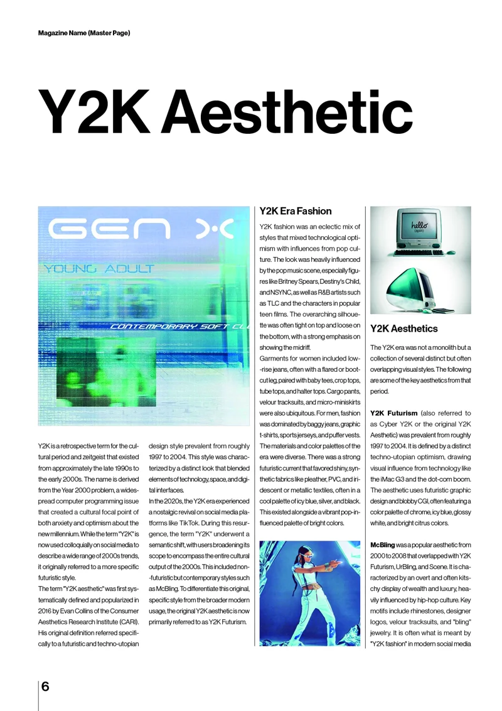
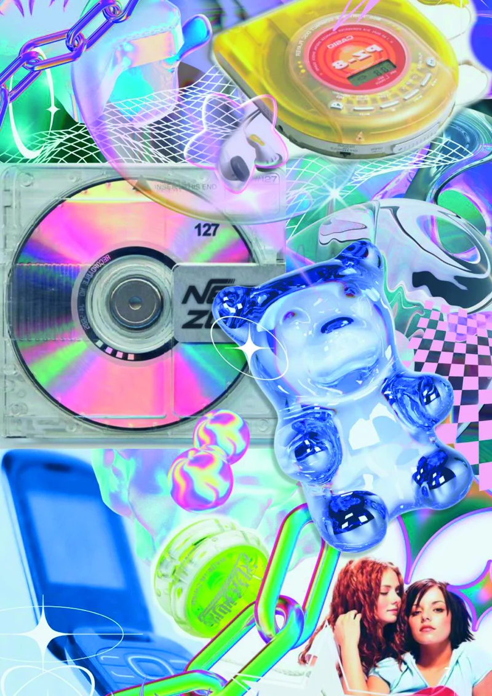

Issue No. 02 explores the Y2K aesthetic through a print magazine concept. The selected work below shows the cover and full-bleed image treatment. A glitch-influenced photograph contrasts with the clean Bound title. The self-initiated project focuses on layout and typographic skills in InDesign.







